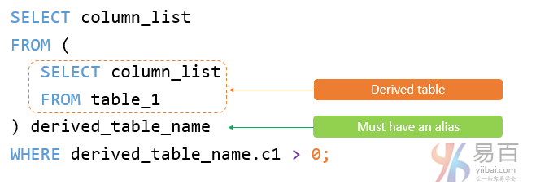
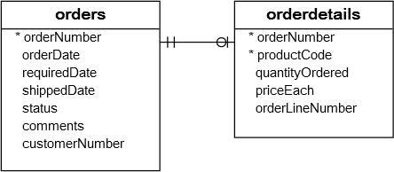

MySQL 派生表
在本教程中，您将了解和学习MySQL派生表以及如何简化复杂查询。
1. MySQL派生表介绍
派生表是从SELECT语句返回的虚拟表。派生表类似于临时表，但是在SELECT语句中使用派生表比临时表简单得多，因为它不需要创建临时表的步骤。
术语:*派生表*和子查询通常可互换使用。当SELECT语句的FROM子句中使用独立子查询时，我们将其称为派生表。
以下说明了使用派生表的查询：

请注意，独立子查询是一个子查询，可独立于包含该语句的执行语句。
与子查询不同，派生表必须具有别名，以便稍后在查询中引用其名称。 如果派生表没有别名，MySQL将发出以下错误：
Every derived table must have its own alias.
以下说明了使用派生表的SQL的语法：
SELECT
column_list
FROM
(SELECT
column_list
FROM
table_1) derived_table_name;
WHERE derived_table_name.c1 > 0;
简单的MySQL派生表示例
以下查询从示例数据库中的orders表和orderdetails表中获得2013年销售收入最高的前5名产品：

参考以下查询语句 -
SELECT
productCode,
ROUND(SUM(quantityOrdered * priceEach)) sales
FROM
orderdetails
INNER JOIN
orders USING (orderNumber)
WHERE
YEAR(shippedDate) = 2013
GROUP BY productCode
ORDER BY sales DESC
LIMIT 5;
您可以使用此查询的结果作为派生表，并将其与products表相关联，products表的结构如下所示：
desc products;
参考以下查询语句 -
SELECT
productName, sales
FROM
(SELECT
productCode,
ROUND(SUM(quantityOrdered * priceEach)) sales
FROM
orderdetails
INNER JOIN orders USING (orderNumber)
WHERE
YEAR(shippedDate) = 2013
GROUP BY productCode
ORDER BY sales DESC
LIMIT 5) top5products2013
INNER JOIN
products USING (productCode);
在上面这个例子中：
- 首先，执行子查询来创建一个结果集或派生表。
- 然后，在
productCode列上使用products表连接top5product2013派生表的外部查询。
一个更复杂的MySQL派生表示例
假设必须将2013年的客户分为3组：铂金，白金和白银。 此外，需要了解每个组中的客户数量，具体情况如下：
- 订单总额大于
100000的为铂金客户； - 订单总额为
10000至100000的为黄金客户 - 订单总额为小于
10000的为银牌客户
要构建此查询，首先，您需要使用CASE表达式和GROUP BY子句将每个客户放入相应的分组中，如下所示：
SELECT
customerNumber,
ROUND(SUM(quantityOrdered * priceEach)) sales,
(CASE
WHEN SUM(quantityOrdered * priceEach) < 10000 THEN 'Silver'
WHEN SUM(quantityOrdered * priceEach) BETWEEN 10000 AND 100000 THEN 'Gold'
WHEN SUM(quantityOrdered * priceEach) > 100000 THEN 'Platinum'
END) customerGroup
FROM
orderdetails
INNER JOIN
orders USING (orderNumber)
WHERE
YEAR(shippedDate) = 2013
GROUP BY customerNumber
ORDER BY sales DESC;
然后，可以使用此查询作为派生表，并按如下所示进行分组：
SELECT
customerGroup,
COUNT(cg.customerGroup) AS groupCount
FROM
(SELECT
customerNumber,
ROUND(SUM(quantityOrdered * priceEach)) sales,
(CASE
WHEN SUM(quantityOrdered * priceEach) < 10000 THEN 'Silver'
WHEN SUM(quantityOrdered * priceEach) BETWEEN 10000 AND 100000 THEN 'Gold'
WHEN SUM(quantityOrdered * priceEach) > 100000 THEN 'Platinum'
END) customerGroup
FROM
orderdetails
INNER JOIN orders USING (orderNumber)
WHERE
YEAR(shippedDate) = 2013
GROUP BY customerNumber) cg
GROUP BY cg.customerGroup;
本教程中，您已经学会了如何使用FROM子句中的子查询作为MySQL派生表来简化复杂查询。